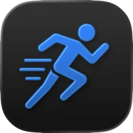
Track Every Race.
Own Every PR.
Log past races, plan upcoming ones, and watch your progress unfold, all in one beautifully simple app.
Built for runners, by a runner
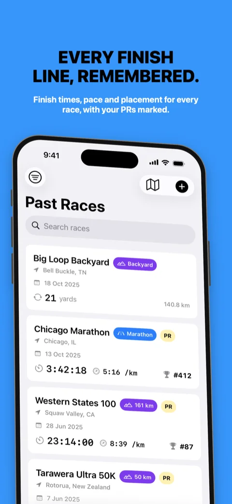
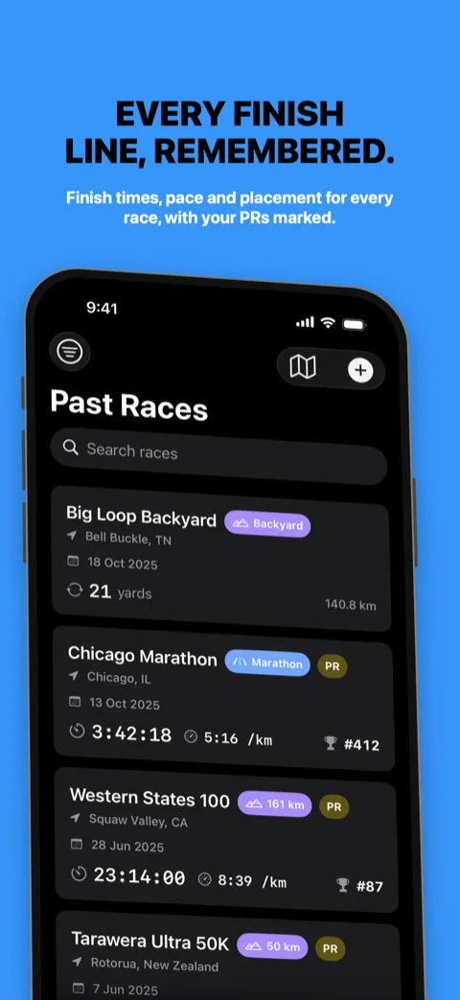
Past Races
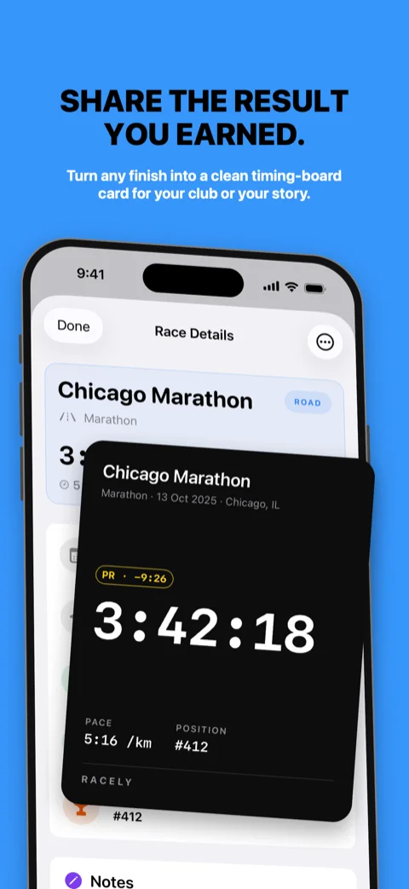
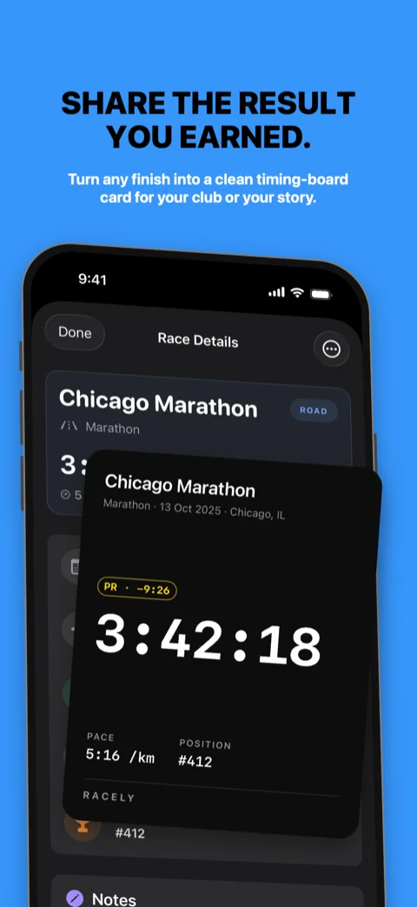
Share a Result
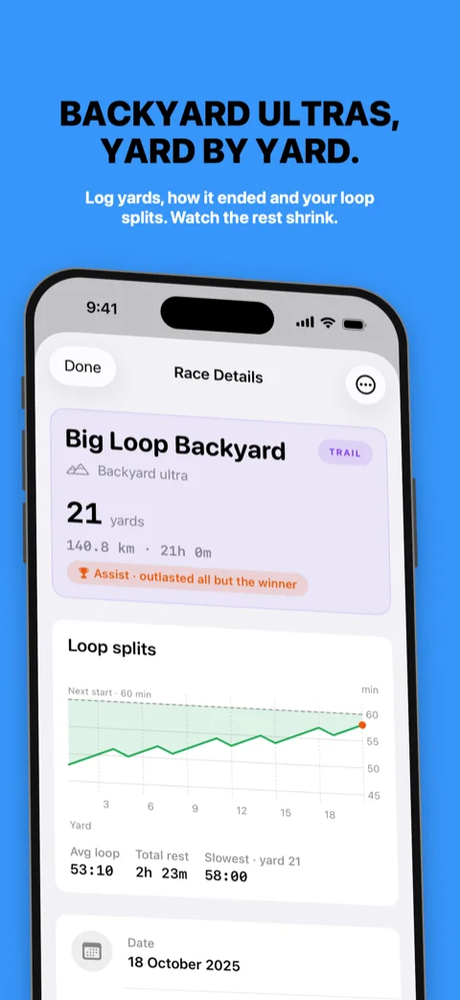
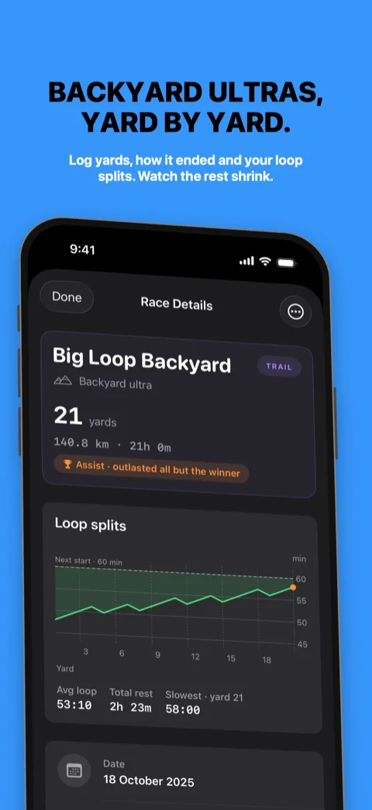
Backyard Ultras
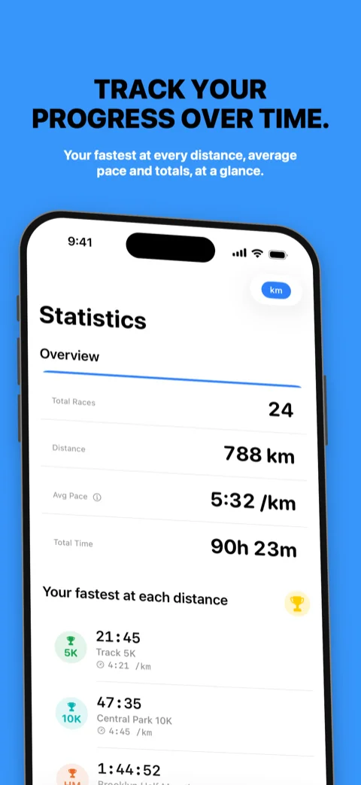
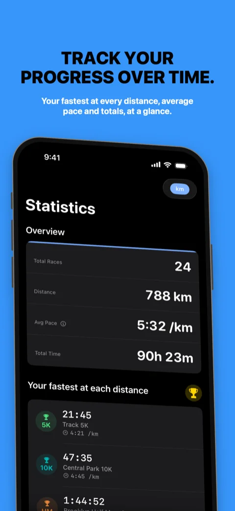
Stats
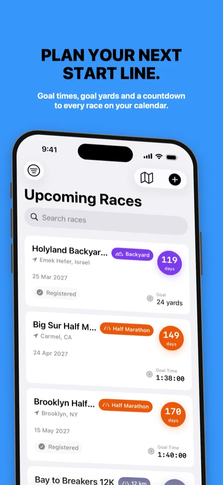
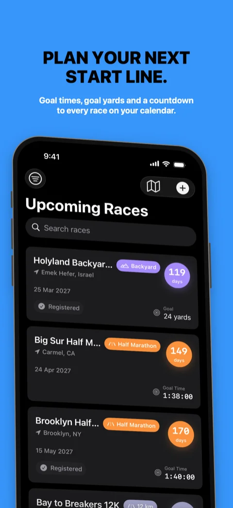
Upcoming Races
Everything a runner needs
Race History
Log every finish with times, positions, and personal notes. Your complete race story, always at hand.
Race Planning
Organize your calendar, set goal times, and get race day reminders sent straight to your phone. Stay race-ready year-round.
Statistics
See your progress in a pace trend, plus your races broken down by distance and by type.
-
All Distances
From 5K sprints to full marathons, plus custom distances for when the race doesn't fit a mold.
-
Runner Profile
A personal space for your PRs, preferred distances, and running identity. All yours.
-
Race Locations
Pin every race to a city and switch to map view to see your entire race history plotted on a map.
-
Strava Import
Connect your Strava account and import your race history in one tap.
-
Home Screen Widgets
Keep your next race countdown and personal bests on your home screen, always a glance away.
Whatever terrain you race on
City races, 5Ks, half marathons, and marathons on paved streets
Off-road adventures through mountains, forests, and wild terrain
Speed work and competitive events on the oval
Every race. Every device.
Your race data follows you everywhere. iCloud sync keeps your history, upcoming races, and profile backed up automatically, so switching to a new iPhone or reinstalling is completely painless.
- Automatic: no setup beyond your Apple ID
- Works offline, syncs when you're back online
- Private: data stays within Apple's ecosystem
- Reinstall anytime: everything comes back
Your next PR starts with
knowing where you've been.
Free for iOS. Log your first race in under a minute.
Download on the App Store